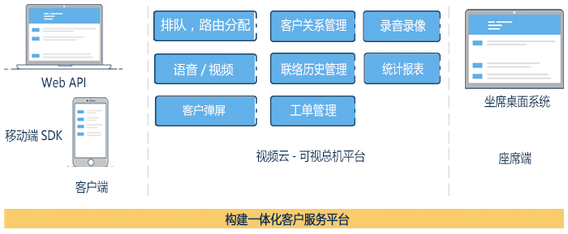
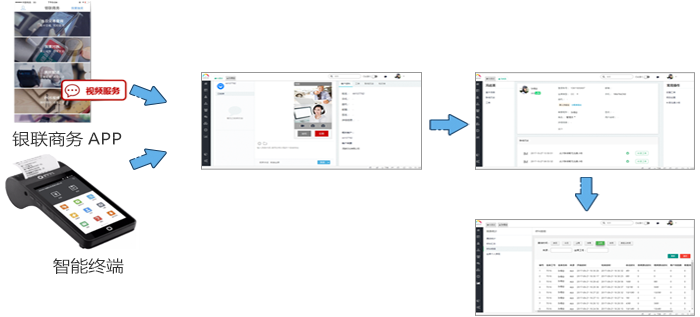

因设备维修专业性强，传统电话方式难以正确描述并定位问题而导致“无功而返”的现象时有发生。报障接待人员与技术人员分离，服务流程长，导致效率低下，而且增加厂家的人员成本。
主要面向产品售后服务，产品出现问题时，维修人员无需亲自到达现场，通过视频方式连线到专业维修人员，准确定位问题，实时解答故障，减少故障给客户带来的损失；同时维修信息可在线备案，建立维修档案，为服务提升与改进提供依据。
支持坐席手动置忙/置闲
支持多种路由分配策略，支持根据实际需求添加新的路由分配策略；支持排队
支持客户在线预约，到达预约时间前提醒客户
支持全程录音录像或关键画面拍照、录像；可云端存储或指定位置存储
支持多种形式的客户弹屏，默认客户页弹屏或指定web地址页面弹屏
支持客户资料导入，客户信息录入、编辑等，坐席人员可在系统内部进行客户维护
每次客户呼入会单独形成一条联络历史，含客户信息及相关录音录像资料
支持在系统内针对某一个客户生成工单，可指定到相应的坐席或坐席组
支持客服知识库维护，便于客服在服务客户时调取
支持漏话统计、呼叫汇总、呼叫明细、坐席个人表现等报表统计
银联商务面向pos机商户开放视频报障服务，商户用户可通过银联商务app或智能终端，向银联商务报障坐席发起视频请求，在线实时解决故障
